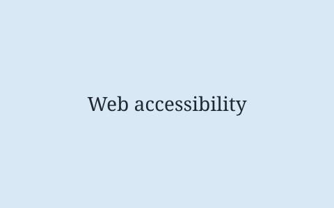
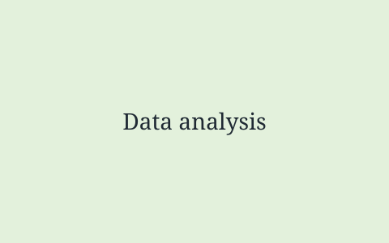

Technical interests
These are the areas of computing I enjoy most and want to work in. They are not tutorials, just a short note on why each one matters to me.

Accessible web development
I am interested in building websites that work for everyone, including people who use a screen reader, navigate with a keyboard only, or need larger text and higher contrast. Good accessibility is mostly good engineering: clear structure, sensible defaults and testing with the tools people actually use.
This site is my first attempt to build something to the WCAG 2.2 AA standard from the start rather than patching it at the end. The accessibility report that goes with it records what I found with WAVE and what I changed.

Data analysis with Python
I like taking a messy dataset and turning it into something a person can act on. In my modules I have used Python with pandas and matplotlib to clean data, explore it and present findings in a notebook. What I enjoy is the point where a chart makes a pattern obvious that a table of numbers hid.
I would like to take this further into machine learning during my placement year, particularly models that are explainable enough for a non-technical reader to trust.
Cyber security fundamentals
Security is the part of computing where small mistakes have the biggest consequences. I am interested in how everyday applications get broken, through things like injection, weak authentication and poor input validation, and in the habits that stop that happening in the first place.
On this site that interest shows up in a small way: the contact form checks its input on the client side and never trusts an empty or malformed field.